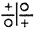

Nowhere will one find such a mass of superstitious customs practiced, as in Cuba; especially among the black and mestizos, and even the educated whites, while not admitting their belief in witchcraft have a wholesome fear of the Brujo or witch doctor.
It is probable that most of these queer practices were introduced by the blacks who brought their strange beliefs from Africa. The belief in the Evil Spirit was doubtless the result of their early contact with the aboriginal Cubans, who worshipped the devil.
Ñañiguismo is a form of superstition in which Catholicism and witchcraft are mingled in bewildering confusion.
The society of Ñáñigos was first introduced in Cuba in 1836 by a cabildo of the Carabalí nation; many conjectures as to its origin have been put forward, but it is most probable that a priest or Chief of the African institution called Ñanguitua, was brought to Cuba as a slave and here resumed his official character among his enslaved countrymen.
The first Juego or chapter was founded in Regla and called the Apapa Epi; it was officially sanctioned and licensed by the government. [4]
The African order disbelieved in God and the worship of idols and fetiches prevailed: in fact was one of the principal causes of the organization of the society. Brujos or members of the order who were supposed to possess supernatural powers were consulted in all cases of sickness. Slave holders claimed that “the gente de nación (imported slaves) refused to be doctored by other means than their own brujos and corporal punishment was absolutely necessary to overcome their stubbornness”.
Whites and even mulatoes were at first refused admission to the society, but in 1863 a traitor to the original chapter sold for twenty cents the secrets of the order to a society of white and mulatoes who by means of the secret pass words and signs gained admittance to the hall where an initiatory session was in progress and demanded that their chapter be recognized by the head Juego. A severe battle was the outcome of this high-handed manner of securing the administration of the initiation rites, but eventually resulted in the formation of the Ocolio Ñáñigos, an order in which whites and half castes were admitted.
Many catholic rites were introduced in the new order, which however did not entirely displace their belief in their former idols.
The Ñáñigos about this time began to assume a vicious character and soon became a serious menace to society; the degenerate whites who became Ñáñigos soon displaced the old negro kings or chiefs and introduced many new customs, most of which were not to be desired in a civilized country.
It is a curious fact that the avatism or reversion of half breeds almost always result in excesses. Religious dances of an indecent character were introduced and more revolting rites of initiation installed.
Rivalry among the different chiefs sprung up and dissensions among the various orders soon assumed a bloody aspect.
Sanguinary battles among the negros and half castes were common every feast day and resulted in stringent laws being passed against the entire organization.
After the entrance of whites and mulatoes in the different orders the cross became one of the most important symbols of the order.
The great seal was used only by the head chapter at Regla, each district having a different symbol. [5]
All initiatory rites were performed by the chief of the district and the Carabali tongue was used exclusively. The novice was marked on the forehead with blood in the sign of the cross + on the breast  and on the back after which he was struck several times with the palo Mocongo, a cane covered with skin and mounted with precious metals; this was to test his courage; many other ceremonies were practiced.
The novice being declared a fit candidate for membership, blood was mixed with aguardiente and drunk by the new member and a wild scene of revelry wound up the ceremony.
Under the severe laws passed, Ñañiguismo shrunk to insignificant proportions and the different chapters were supposed to have been broken up.
During the last few years it has been on the increase, the character however having somewhat changed.
But little can be learned of this society, at present a recent criminal cases brought to light the fact that the very rites of initiation were criminal in their character, a novice in the society must wound some stranger and drink the flowing blood before the last rites are administered.
The Society is governed by a King, who is represented in each district by a “Father of the Community” or Chief Doctor, who has at his command the Brujos or Conjurors.
Santa Baraba, the patron saint of the order is no less than a savage idol with a Catholic name.
There are annual fiestas in honor of this Saint, where only members of the Society are admitted, but I was fortunate enough to witness from a friendly roof the sacred dance and battle with the devil.
Clothed only in long strings of feathers, the Brujo who played the part of “leading man”, prostrated himself before the sacred image and lighted the sacrificial flames.
Goats, black cocks and other animals were brought forward by the devotees and beheaded. Fruit also was offered.
The nature of the sacrifice most acceptable to the Mabruja is communicated in advance to each of the Saint’s followers, through the medium of the Brujo.
It is certain that most of the time the exigencias of the saint do [6]not pass the sacrifice of a fat cock, or a goat whose head is consumed by the flames (while the father of the community eats the rest of the victim), but cases have presented where the dagger or poison, have been ordered to remove some obstruction from the path of private individuals, whose money has influenced the saint to decree their death.
Sacrificial dances are always at night and the weird, scantily clad figure of the officiating priest can easily be likened to that of some demon tending the infernal fires.
After the sacrifice, the low monotonous moaning of the tom-tom announces that the ball has opened.
Twisting his body in painful contortions, the brujo dances about the sacred fire, gaining momentum with each round until he at last resembles a human pin-wheel; now slower and slower he dances, scanning the faces of his fear-stricken followers for a victim, until at last his hypnotic eye fixes upon an aged negress, who falls screaming to earth in convulsed fear. She is possessed of a Mabruja or Evil Spirit, who has inconsiderately taken possession of the old lady’s person, without her leave, and the “doctor” wants to extract it; apparently the operation becomes painful to the old lady, who would doubtless have much rather been left in quiet possession of his satanic majesty.
After much manœuvring, the doctor announces that the Mabruja was vanquished and has left his country woman, who still sits in comical amazement where she had fallen; to one who has really entered the inner life of the country districts of Cuba this is no strange sight.
One of the most abhorrent practices of witchcraft is the use of Love Philters composed of ingredients of a nature too horrible to mention. It is needless to say that this custom is practiced almost solely by the lowest class of society, but in so great respect and fear are its results held that almost the first advice one receives on arriving in Cuba, is to never accept refreshments in a strange house, for fear that they may contain this concoction; many tales are told of young men who by means of this drug have been lured into attachment for women of shady complexion and still more shady reputation.
The Piedra Imán, a sort of lodestone, plays an important part [7]in the practice of witchcraft; sacrifices of animals are made to this stone whose absorbent qualities cause it to greedily suck the blood of the victims. In sickness and love this stone is always in evidence. Are you dying of unrequited love? No need to worry while a dozen old witches are aching for the opportunity of relieving your heart (and pocket). For gold a small stone will be placed in your possession and if you carefully follow directions, luck will attend your affairs with Cupid.
To succeed it is necessary to secure a strand of hair (pulled, not cut) and the parings of your loved one’s nails; these are mixed with steel filings and placed with the “stone” in a metal box. On Mondays the “stone” is strictly teetotal and only water may be offered, but as Friday draws near, the “God” develops a taste for strong liquor and wine must be given it. Woe betide the mortal who neglects the “little God’s” taste in drinks.
Has disease laid its foul hand on your person? No need to worry; any witch doctor will recommend the following recipe.
| ℞ | 1 Pair half burned candles. |
| 7 Grains of corn. | |
| 7 Copper pennies. | |
| 7 Clean pebbles. | |
| 1 Head of a black cock. | |
| 7 Pieces glass. |
Wrap carefully in red cloth, this enclose in black cloth, over all wrap a large white handkerchief and place in public highway, await developments …. An innocent wayfarer comes down the highway, sees the ownerless package and gleefully makes off with it. Oh joy! you are already feeling better, and the one who so fondly imagines he has found a fortune wrapped up in a napkin, has only brought down upon his head the load of your disease!
Barrenness need no longer bring grief to those who long for the patter of little feet about their home.
Secure a white child and with the help of a brujo extract its heart and take in small doses!!
It is impossible to dispute the fact of this and other horrible cannibalistic practices to which the superstitious negros are addicted; [8]the public can scarcely have forgotten the developments of the noted “Gabriel Case” when a number of Brujos were sentenced to long terms of imprisonment and one at least received the death penalty.
Not only in the greater joys and griefs of life is witchcraft used, but in the petty annoyances of everyday life.
The dread combination of sprinkling salt in an old shoe and placing it upon an upturned broom, has caused many an unwelcome guest to hasten his departure.
Some of the common superstitions are: never twist an empty chair.
Never read by the light of two candles; you are mocking death.
A moth flying about you at night means that you are to receive a letter.
A match which continues burning after being thrown away will bring you money.
A dog scratching the floor of a house is digging his master’s grave. He will soon die.
If a hearse passes a person twice during the same funeral, he will be its next occupant.
Never cross the arms over the head; your mother or nearest relation will die.
Never sweep the crumbs from a table with a paper; it will bring disgrace to your family.
In former years, when the milk man brought his cows along to town and milked them before your door, there was a curious belief that if a cow bawled in front of a house where a sick person lay, that person would die.
If a mass is not said for the repose of a soul, the newly dead will come at night and pull the feet or carry off the blanket of the nearest relation.
A black moth flying at night means that there will be a death in the house.
Should an eyelash fall, you will receive a visit from a long forgotten friend.
If an owl hoots as it flies over a house, somebody in that house will die.
That there is “something” in witchcraft it is impossible to [9]deny. The fear and reverence in which the brujos are held is far more powerful than their fear of the law, as has been shown in several recent criminal cases.
Is it not possible that the something, is mesmerism, that the subjects are mesmerized by their own belief in the brujo, or that the brujo himself has acquired the power of hypnotism though unconscious of the source or nature of this power, a “power” that makes him different from other men?
Superstition is a serious menace to the advancement of Cuba. [10]
Fortunately for history, most early Spanish expeditions were accompanied by such observers as Las Casas, Cortés, Gomara and Oviedo, who although differing in minor details and unreliably eulogistic of their own expeditions and leaders have agreed on their accounts of the habits of the Indians as found at the time of the discovery.
Bartolomé Las Casas in particular made a study of the Indians and in so far as possible sought to relieve their sufferings.
Separated by but a narrow stretch of water from the other islands of the West Indies, Cuba was inhabited by an entirely different race of men. The Caribes, who infested the smaller islands, were a warlike tribe of anthropophagi who terrorized the shores of Cuba by frequent and bloody excursions, carrying off many captives for their cannibalistic feasts.
The Indians of Cuba were of the Siboneyes tribe, excepting those about Bayamo and Baracoa, who were of the Caribe nation. In these two localities deformed skulls have been found identical with those collected at Guadalupe, the principal seat of the Caribes.
Several hypotheses have been given of the origin of the Siboney Indians. Some writers claim them as descendants of the Mayas of Yucatan, but Bachiller y Morales disposes this on the radical difference of the characters of the two tribes. With the exception of [11]the Floridians and the Araucanians of Chile; the Siboneyes are unlike all other American Indians.
Abbe Don J. Ignatius Molina writing of the Araucanian about the year 1800 says, “The natives of this part of the New World being of a mild character, much resembling that of the Southern Asiatics,” and again: “The features of both (hill or plain tribes) are regular; they have round faces, small animated eyes full of expression, a nose rather flat, a handsome mouth, even and white teeth, muscular and well shaped limbs and small flat feet.”
Of the Siboneyes Bachiller y Morales says: “They did not present the robust muscularity of the North American Indian nor did the expression of their faces assume the bloody instincts of the Caribe. In color light olive, they were tall straight limbed men of peaceful disposition who lived mainly by the chase and agriculture.”
On the strength of this resemblance some writers have concluded that the Siboneyes were descendants of the Araucanians. This disagrees with the traditions of the Siboneyes themselves who claim to have immigrated from Florida; first driving from the island the males of a nation who were inferior to themselves in number and civilization; moreover the Indians of Cuba long had tradition of the wonderful land of Cantio or Florida.
Washington Irving in his “Spanish Voyages of Discovery” says: “The belief of the existence in Florida, of a river like that sought by Juan Ponce, was long prevalent among the Indians of Cuba, and the caciques were anxious to discover it.”
Geographical conditions would also favor the theory of the Siboneyes coming originally from Florida.
Evidence of an earlier race in Cuba has been discovered in the caves of the eastern part of the island. Skulls differing greatly from both those of the Siboneyes and Caribes have been found, as well an stone implements, which most authors agree were not used by the Siboneyes.
It is probable that the Siboney tradition of their coming originally from Florida is correct.
At the time of discovery, Cuba was divided politically into thirty different states as follows:
Sabeneque, Cayaguaya, Manibon, Bani, Barajogua, Sagua, Baracoa on the north coast; Hanamano, Jagua, Guanjaya, Magon, [12]Omapai, Guanaros, Cueiba, Cucanajani, Macaca, Boyuca, Bajatiquiri and Masi on the south coast; Cuanajami, Guanejuanica, Marien, Habana, and Canauei touching both coasts; Macoriges, Calacon, Bayamo, Maeye and Cuamaj in the interior.
Each state was independent and was governed by a king or cacique who was absolute ruler of the nation: subject to no laws and holding the power of life and death over his subjects, this power was seldom used arbitrarily, the cacique appearing more in the role of a father to his people.
The subjects of the kingdom were called tainos probably signifying citizens or subjects; they were of different rank; the naitains or naitanos formed the nobility or commanding part, the naboris or anaboris the vassals or laboring class, who were divided into different groups, each group under the authority or command of a naitains.
As a mark of distinction the nobles wore the hair tied high up on the head and on feast days adorned themselves with feathers, gold shells, etc. The hair of the vassal was cut straight about the ears.
The national laws were few and severe, theft being the crime most severely punished.
The convicted thief was impaled on a large stick and suspended between two upright posts until life was extinct.
As among many uncivilized races most of the manual work was performed by women. Among the Siboneyes married men were exempt from agricultural presents, but assisted in gold washing, etc. They were obliged however, to live separate from their families for some time before going on a gold hunting expedition.
“Los hombres casados iban en busca de oro á los ríos como los demás, pero se abstenían de la cohabitación y trato mujeril antes, para que no se les turbara la vista”.
The primitive Cubans were of an amorous disposition, somewhat indolent. Polygamy was permitted, but seldom practiced except among the ruling classes; promiscuous intercourses and unnatural crimes were ascribed to the Siboneyes by the early settlers. Narvaez gave this as his excuse for the massacres of the entire Indian village of Caonao.
Their acts were very ceremonious especially when receiving a [13]visit from a neighbouring cacique. The receiving cacique was borne forth in a litter preceded by a number of women who were slightly clothed, and who scattered palm leaves before the approaching guest. A visit was always attended by great feasting, where nobles acted as servants to the visiting cacique, during the feast the women entertained their lords by songs and dancing; a number of young girls were always appointed to the service of a welcome visitor as a peace offering.
They in common with other West Indian nations had a tradition of the formation of the world. Lucuo (God) formed the world, we know he made all things; he came from a country beyond the clouds peopled by spirits and souls. The world was first formed without mountains or water, but under the influence of the sea sunk forming mountains and bringing fair water.
Lucuo formed the first man of wheat; when he was finished he touched the image on the stomach with his foot changing it into two grand Lucayos, male and female to whom nine divine offsprings were born.
The first Nounm (the moon) was very proud and boastful of his brilliancy but when Huin (the sun) was born and showed his shining face Nounm became ashamed and hid himself only coming out at night when Huin is absent.
The other offsprings were given charge of the elements.
Cuasima was chief of the Cemi inferior gods who were the offsprings of Lucuo and the first woman.
Lucuo lived a long time with his people and taught them the first principles of agriculture.
Taking an old man aside he buried a stick in the ground and told him to dig in the same place after nine months had passed; at the end of this period the old man dug up the place as directed and found yuca growing.
The Behique or doctors of the tribe exerted an important influence. They were charged with the perpetuation of the nations history or traditions, which were taught to the children of the nobility in the form of songs which were chanted by them on feast days.
The Behique was also at the head of their religion. Their prayers were directed not to the creator by but to the Mabuya or [14]bad spirit their belief being as “God is good it is not necessary to gain his protection; the devil is bad and it is therefore better for us to adore and propitiate him so that he will work us no ill.”
Their intercessions were made through the medium of the Cemi inferior Gods of whom stone images were erected, and who acted as messengers to the greater Gods. Each Behique had his own particular Cemi called Cochexi who was solely at the command of that special Behique; the Cochexi of some Behique, were regarded as superior to others. The Cemi also had charge of all natural objects such as the springs, the rain, thunder, and dew.
Diseases were very rare and also very violent among the Siboneyes; the Behique cured their followers by medical preparations of herbs and roots, together with magical symbols and by blowing upon them; after fasting and pretending to hold direct communication with their Cemi.
Twice a year great religious feasts were held when the Behiques fasting weeks in advance living only on the juices of certain grains appearing weak and emaciated. After the usual sacrifices to the Cemi they worked themselves into a religious ecstasy; while in this condition they were questioned on subjects of interest, such as the probability of war, battles and death, their answers being received as coming direct from the Gods.
At their fiesta or Gloritas wonderful dances were held several taking hold of each other’s hands then moved themselves to the rhythm of a slow chant and the music of the tom-tom, a hollow trunk of a tree covered by the skin of some wild animal. It was their custom to dance until so exhausted that they fell to the ground. During the dances wine was passed from one to another and drunk without spilling or interrupting the dance. Men and women danced together only on the occasion of a great victory or on the birth or death of a cacique, when no wine was drunk.
The Siboneyes were armed with the bow and arrow, dart and mace; the arrow and dart were tipped with fish bones; the mace was a heavy club made of hardwood and seems to have been their favorite weapon. They also construed clever traps to ensnare game.
They had a primitive idea of weaving and wove cloth from the wild cotton plant that appears to have been indigenous to Cuba. [15]
Fire was made by rubbing a piece of hard wood between two pieces of softer wood.
Fishing was one of their pursuits many of the houses of the noble were built upon piles along the shores of streams; this was probably a means of securing themselves against surprise by the cannibals.
The hardships to which the Siboneyes were subjected has caused them to rapidly disappear, with the exception a possible few among the mountains of Santiago. The race has entirely disappeared even as early as 1532 but 5,600 of the original population of two hundred thousand (according to Las Casas 1.000.000) remained in 1511. Moreover in 1553, Fray Luis Beltran writing of the travels in Cuba in 1551 claims they were entirely exterminated.
“Los 200.000 indios que entonces contenía serían exterminados por los tratamientos de que eran víctimas.” [16]
In Cuba as in all pro-Catholic countries the natives have a host of saints to whom they attribute various supernatural powers; they are held in greater or less esteem according to the miraculous cures they have achieved or the concessions they have granted their followers.
Each family or individual has a special saint to whom they appeal in times of trouble or sickness. Sometimes however when a saint has repeatedly proved inefficient or has failed to grant the wishes of a devotee, it is cast aside or exchanged for one that has been recommended by a friend. It is no unusual thing to hear one lady advising another to try such and such a saint. “Rece á San José, él me ha concedido todo lo que yo le pedí”. Pray to San José he grants all I ask him.
There are also a number of saints who are specially efficient in certain diseases or conditions. One always prays to San Blas to cure throat trouble, and young ladies know that San Nicolas with gladly assist them to secure good (rich) husbands, San Ramón protects them during pregnancy and San Lázaro during child-birth. Sta. Bárbara makes timid hearts brave in times of war; Santo Domingo cures fever, Santa Lucia looks after the eyes, San Antonio protects from fire; and so in every case that may be presented there is some saint (or [17]saintess) who has taken that disease or ill for their special power of benefaction.
When an article is lost San Antonio de Padua is in disgrace until it is found. The figure of the saint is placed head-down-wards and if some time elapses without the lost object being recovered the image is bound to a chair back and severely whipped for failing in his duty; if the lost object still remains undiscovered the infant which always accompanies the saint is cut away from the image and the following couplet repeated
“San Antonio Bendito
si no me concedes lo que te pido
no te devuelvo tu niño.”
“Blessed San Antonio if you do not grant what I ask, I will not return your child” this last resource rarely fails in causing the recovery of whatever is missing.
“El Señor Milagroso” the miracle worker, is an image treasured as one of the most valued religious possession of Matanzas. Although the church has offered many thousands of dollars for its possession, and its owner is in comparatively poor circumstances, it still remains in the hands of a private family.
It has been handed down through many generations of the Castro family and is at present in the possession of Sr. Arturo Castro who has built a shrine where all are welcome to visit and revere the saint.
This saint is supposed to instantly answer the prayer of those who are in great danger. A curious story is connected with the image of a snake twined about the body of a man that is placed before in the saint.
During the revolution of 1868 when many well to do families were temporarily reduced to needy circumstances an old man was accustomed to visit his married son about the time of the mid-day meal. The son who found it difficult to fill the all too many mouths of his own household one day ordered the meal to be kept back until his father had gone. The father came and failing to see the usual preparations for breakfast in progress inquired if the meal had already been served, he was given to understand that it had and left the house somewhat nettled as was natural. The dish was now ordered to be placed on the table with the least possible [18]delay. As moments passed and no food appeared the master of the house went to the kitchen to inquire the causes of delay and there found the servant struggling to lift the cover from a kettle. Angry at the inability to perform so apparently simple a task he gave the cover a pull … and then slowly from the boiling liquid appeared the shining coils of a monstrous serpent, which wound itself about the body of the selfish son! … imagine the confusion and consternation in which the household was thrown on seeing their master in the coils of this huge monster.
The master finding it impossible to release himself from the coils of the serpent and realising that this was the punishment of God for deceiving his parent vowed to present the Señor Milagroso a silver image of the incident.
El Santo Sudario is a saint out-lawed and unrecognized by the authorities of the church; persons found wearing the reliquary containing the prayer to the saint are accounted rebels against the church and are excommunicated.
This saint is the patron of robbers and assassins, and of people who are in constant danger of death by violence or drowning.
El Santo Sudario or Just Judge protects its followers against fire, wild animals, bullets, death by drowning, and hanging, it is in great request by soldiers or sailors.
During the Spanish regime in Cuba it became a misdemeanor to have an image of the saint in one’s possession it being believed by the authorities that it gave criminals immunity against detection or arrest.
A laughable accident in connection with the saint happened to the knowledge of the writer. During the last political unpleasantness an officer of the government forces was pressed to accept a present of a reliquary of El Santo Sudario to protect him against the dangers of battle incredulous of its power but willing to please his friend he accepted the gift and placed it about his neck. The reliquary encased in a red silk bag to prevent its chafing the skin was soon forgotten.
While taking account of the casualties after a very active skirmish the officer was astonished and somewhat frightened to have his attention called to an apparently severe wound he himself had received in the breast. Glancing down sure enough a huge stain of [19]blood had appeared on the front of his uniform. Feeling no pain and the wound appearing in such a vital place the officer imagined himself booked for the long voyage. Frantically tearing open his clothing in haste to stop the bleeding he found to his surprise that the red silk bag, containing the reliquary was dripping with perspiration and had run through his clothing.
The Shrine of La Santa Imagen in the Hermitage of Monserrat, Matanzas, is the Mecca of the Spanish residents of Cuba, who annually in the 8th of November journey from all parts of the Island to attend the fiesta of Monserrat.
This saint is supposed to have the power to grant three wishes to those who fulfill their vows during the year. The many offerings of gold and silver about the altar offer eulogiastic proof of the faith and esteem in which the saint is regarded. These objects are vowed to the saint in times of sickness or despair and usually take the form of a miniature representative of the parts of the body that are made well by the intercession of the saint.
Vows of humility are also made to the saint. One devout more believer has passed the whole of each fiesta on his knees for than 20 years, in fulfillment of a vow made when he received intelligence of a fatal accident to his only daughter that happened while he was far from home. He vowed to the Holy Image that if he were allowed to reach the bedside of the child before she passed away he would perform this act of humility as long as he lived in gratitude for the saint’s intercession in his behalf.
For some special favor shown young girls will promise Our Lady Carmelo to use no other dress for a certain period than that prescribed by the Order of the Sisters of Carmelo, a dusty brown with black girdle.
La Señora del Cobre is the patron saint of Cuba. This saint is a wooden image placed on El Cobre hill near Santiago of Cuba.
This Image has a touch of the wanderlust often disappearing during the night and returning, covered with sand and sea weed. Once some accident befell it and it was picked far out at sea by a fishing boat and returned to its place.
| Superstition and Witchcraft in Cuba | 3 | ||||||||
| The Primitive Inhabitants of Cuba | 10 | ||||||||
| Some Cuban Shrines | 16 | ||||||||
This eBook is for the use of anyone anywhere at no cost and with almost no restrictions whatsoever. You may copy it, give it away or re-use it under the terms of the Project Gutenberg License included with this eBook or online at www.gutenberg.org.
This eBook is produced by the Online Distributed Proofreading Team at www.pgdp.net.
Scans of this book are available from the Internet Archive (copy 1).
| Title: | Cuban Folk-Lore | |
| Author: | L. Roy Terwilliger | |
| Language: | English | |
| Original publication date: | 1908 | |
| Keywords: | Folklore -- Cuba | |
| Project Gutenberg: | 51040 | |
| Open Library (Book): | OL25398526M | |
| Open Library (Work): | OL10707491W | |
| GitHub: | 51040-Terwilliger-Cuban-Folk-Lore |
This Project Gutenberg eBook contains external references. These links may not work for you.
The following corrections have been applied to the text:
| Page | Source | Correction | Edit distance |
|---|---|---|---|
| 3 | if | of | 1 |
| 3 | licenced | licensed | 1 |
| 4 | centenes | cents | 3 |
| 4 | avatisim | avatism | 1 |
| 4 | iniciation | initiation | 1 |
| 5 | Comunity | Community | 1 |
| 5 | postrated | prostrated | 1 |
| 5 | sacrifical | sacrificial | 1 |
| 6 | comunity | community | 1 |
| 6 | Sacrifical | Sacrificial | 1 |
| 6 | doubtles | doubtless | 1 |
| 7 | developes | develops | 1 |
| 8 | anoyances | annoyances | 1 |
| 8 | imposible | impossible | 1 |
| 9 | hypnotismal | hypnotism | 2 |
| 10 | Primative | Primitive | 1 |
| 10 | accompannied | accompanied | 1 |
| 10 | there | these | 1 |
| 10 | hypothesis | hypotheses | 1 |
| 11 | . | , | 1 |
| 11 | asiatics | Asiatics | 1 |
| 11 | hare | have | 1 |
| 11 | inmigrated | immigrated | 1 |
| 11 | morever | moreover | 1 |
| 12 | has | was | 1 |
| 12 | vassels | vassals | 1 |
| 12 | [Not in source] | , | 1 |
| 12 | vassel | vassal | 1 |
| 12 | vas | was | 1 |
| 12 | empaled | impaled | 1 |
| 12, 12 | siboneyes | Siboneyes | 1 |
| 13 | preceeded | preceded | 1 |
| 13 | was | were | 3 |
| 13 | sen | sea | 1 |
| 13 | asunk | sunk | 1 |
| 13 | fernale | female | 2 |
| 13 | who mnine | whom nine | 2 |
| 13 | ” | [Deleted] | 1 |
| 13 | exected | exerted | 1 |
| 14 | Siboneys | Siboneyes | 1 |
| 14 | emancipated | emaciated | 2 |
| 14 | rymth | rhythm | 3 |
| 14 | occassion | occasion | 1 |
| 14 | ennare | ensnare | 1 |
| 14 | primative | primitive | 1 |
| 15 | then | them | 1 |
| 15 | dissappeared | disappeared | 1 |
| 15 | evenas | even as | 1 |
| 15 | their | they | 2 |
| 17, 18 | possesion | possession | 1 |
| 17, 17 | circunstances | circumstances | 1 |
| 18 | aboutthe | about the | 1 |
| 18 | churchand | church and | 1 |
| 18 | excomunicated | excommunicated | 1 |
| 18 | assasins | assassins | 1 |
| 18 | ; | , | 1 |
| 18 | inmunity | immunity | 1 |
| 18 | uncredulous | incredulous | 1 |
| 18 | reliquiary | reliquary | 1 |
| 18 | Glacing | Glancing | 1 |
| 19 | reliquia | reliquary | 3 |
| 19 | wit | [Deleted] | 4 |
| 19 | pispiration | perspiration | 2 |
| 19 | anually | annually | 1 |
| 19 | in | is | 1 |
| 19 | dispair | despair | 1 |
| 19 | the | he | 1 |
| 19 | wanderbust | wanderlust | 1 |